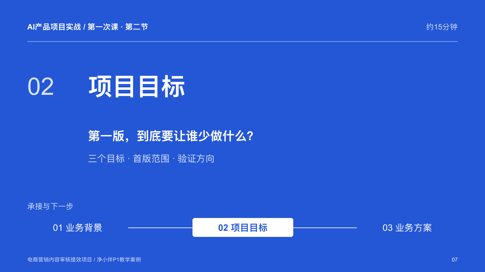
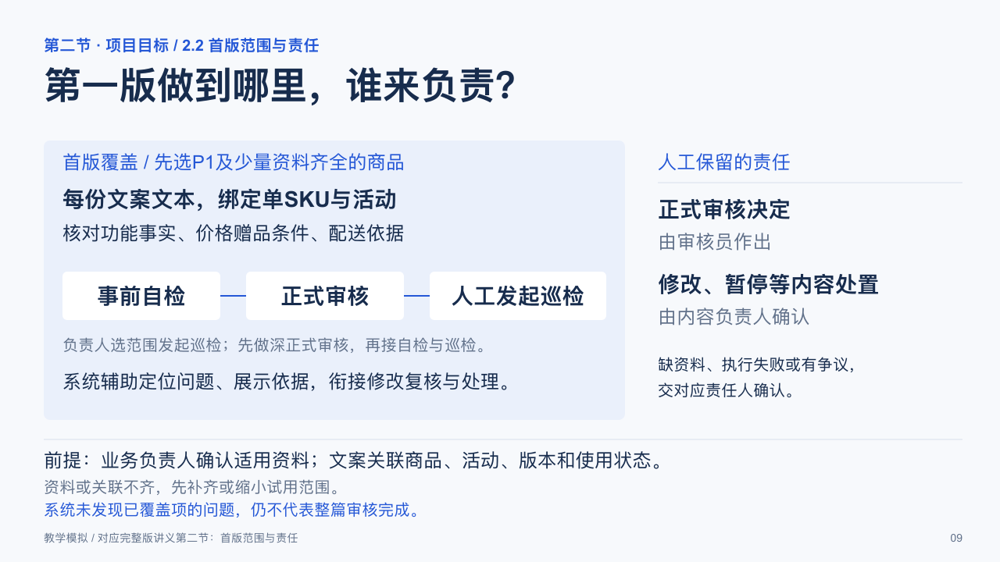
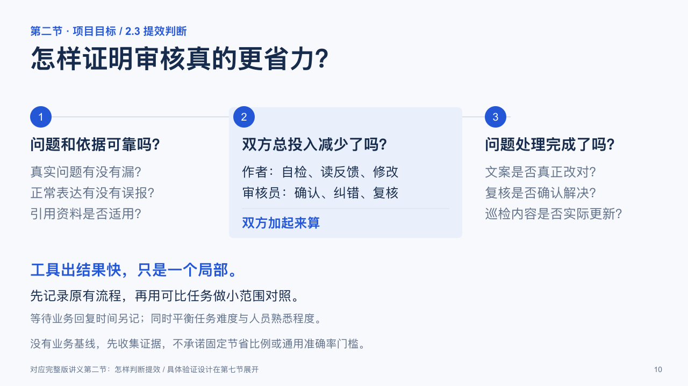

第一次课 · 第二节：项目目标
本节约15分钟，共6页，连续页码P07—P12。从本节起，各节均以章节标题页开场。内容对应完整版讲义第二节：三个工作目标、首版范围与责任、提效判断、课堂讨论和首版项目定义。
P07 · 第二节标题页
P08 · 三个具体目标P09 · 首版范围与责任
P10 · 怎样判断提效
P11 · 课堂判断P12 · 首版项目定义6页均含教师备注，课堂讨论参考答案位于P11备注中。品牌、人物与业务情境为教学模拟；提效目标尚需验证。浏览版PDF由逐页画面生成。